{% include JB/setup %}
{% raw %}
<div>
<div class="calibre24"></div><div class="book" xml:lang="en"><div class="book"><div class="book"><div class="book"><div class="calibre24"></div><h1 class="title"><a id="gnu3-CHP-10" class="calibre1"></a>Chapter 10. Customizing Emacs</h1></div></div></div><p class="copyright">As you have probably noticed throughout this book, Emacs is very
powerful and very flexible. You can take advantage of that power and
flexibility to configure Emacs to match your work style and
preferences. We'll look at several of the most
common customization tasks and also look at a few resources for more
in-depth coverage than we can provide here.</p><p class="copyright">You can customize Emacs in
<a id="gnu3-CHP-10-ITERM-2632" class="calibre2"></a> 
         <a id="gnu3-CHP-10-ITERM-2633" class="calibre2"></a>
         <a id="gnu3-CHP-10-ITERM-2634" class="calibre2"></a>
         <a id="gnu3-CHP-10-ITERM-2635" class="calibre2"></a>three ways: using Custom, the interactive
interface; using the Options menu, which is really a backdoor to
Custom; and directly by adding lines of Lisp to
<a id="gnu3-CHP-10-ITERM-2636" class="calibre2"></a>
         <a id="gnu3-CHP-10-ITERM-2637" class="calibre2"></a>your <span><em class="calibre7">.emacs</em></span> file.
This chapter covers all three of these methods.</p><p class="copyright">No matter what method you use, though, the
<span><em class="calibre7">.emacs</em></span> startup file is modified. Custom modifies
it for you when you save settings through that interface. The Options
menu invokes Custom behind the scenes; when you choose Save Options,
Custom again modifies <span><em class="calibre7">.emacs</em></span>. Throughout the
book, we have been providing lines for you to add to
<span><em class="calibre7">.emacs</em></span> directly so you could adjust Emacs to
your preferences.</p><p class="copyright">Before we get started, we should say that the very easiest way to
customize Emacs is by selecting an option from the Options menu and
choosing Save Options. This menu is designed to provide easy access
to changing frequently used options. For example, you may not like
the Toolbar and its icons, feeling that such graphical codswallop is
beneath an Emacs user. You can hide the toolbar through the Show/Hide
option on the Options menu. Choosing Save Options modifies
<span><em class="calibre7">.emacs</em></span> so the toolbar is hidden every time you
start Emacs. And if you miss the toolbar someday, you can get it back
the very same way.</p><p class="copyright">After describing customization methods, this chapter goes on to
discuss several generic issues relating to customization, including
how to change fonts and colors, modify your key bindings, set Emacs
variables, find Lisp packages to load, start modes automatically
based on file suffixes, and inhibit any global customization files
that may be interfering with your own <span><em class="calibre7">.emacs</em></span>
settings.</p><div class="book" xml:lang="en"><div class="book"><div class="book"><div class="book"><h1 class="title"><a id="gnu3-CHP-10-SECT-1" class="calibre1"></a>Using Custom</h1></div></div></div><p class="copyright">Emacs now ships with a quirky <a id="gnu3-CHP-10-ITERM-2638" class="calibre2"></a>
            <a id="gnu3-CHP-10-ITERM-2639" class="calibre2"></a>graphical-but-not interface that
allows you to customize most aspects of Emacs without knowing the
gory details. This feature, known as Custom, can be accessed by
typing <span><strong class="calibre5">M-x custom</strong></span> or by clicking the
tools icon on the toolbar.</p><div class="book"><a id="ch10-2-fm2xml" class="calibre2"></a><table class="calibre8"><colgroup class="calibre9"><col class="calibre10"/></colgroup><tbody class="calibre15"><tr class="calibre12"><td class="calibre17">
                        <p class="copyright">Type: <span><strong class="calibre5">M-x custom Enter</strong></span>
                        </p>
                     </td></tr><tr class="calibre12"><td class="calibre17">
                        <p class="copyright">
                           </p><div class="book"><div class="mediaobject"><a id="I_10_tt519" class="calibre2"></a>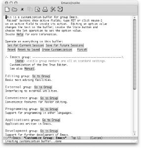</div></div><p class="copyright">
                        </p>
                     </td></tr><tr class="calibre12"><td class="calibre19">
                        <p class="copyright">Emacs displays the startup buffer for Custom (Mac OS X).</p>
                     </td></tr></tbody></table></div><div class="book" xml:lang="en"><div class="book"><div class="book"><div class="book"><h2 class="title1"><a id="gnu3-CHP-10-SECT-1.1" class="calibre1"></a>Navigating Custom</h2></div></div></div><p class="copyright">You can move around in a <a id="gnu3-CHP-10-ITERM-2640" class="calibre2"></a>
               <a id="gnu3-CHP-10-ITERM-2641" class="calibre2"></a>
               <a id="gnu3-CHP-10-ITERM-2642" class="calibre2"></a>given Custom screen much the way you
do in any other part of Emacs. All of the basic cursor movement
commands like <span><strong class="calibre5">C-n</strong></span> and <span><strong class="calibre5">C-p</strong></span> work just as they should. But
that's only part of the story in Custom. To
accomplish anything useful, you need to activate special words and
phrases. Those bits of text in grey boxes that look like buttons are
the words and phrases in question.</p><p class="copyright">To activate one of these buttons, click on the button with the mouse
or position your cursor inside its borders and press <span><strong class="calibre5">Enter</strong></span>. <a class="calibre2" href="ch10.html#gnu3-CHP-10-FIG-1" title="Figure 10-1. Custom button activation using the mouse cursor (top) and the keyboard cursor (bottom) (Mac OS X)">Figure 10-1</a> highlights
these options.</p><div class="figure"><a id="gnu3-CHP-10-FIG-1" class="calibre2"></a><div class="figure-contents"><div class="mediaobject"><a id="I_10_tt520" class="calibre2"></a>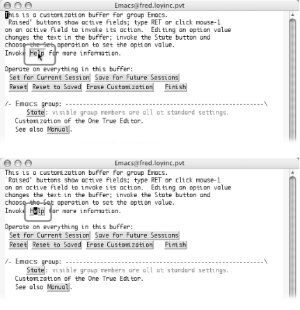</div></div><p class="title3"><b class="calibre25">Figure 10-1. Custom button activation using the mouse cursor (top) and the keyboard cursor (bottom) (Mac OS X)</b></p></div><br class="book"/><p class="copyright">When you finish looking at a screen, if you are not interested in
changing anything, you can type <span><strong class="calibre5">C-x
k</strong></span> to kill the current buffer and go back to the previous
screen. You can also activate the Finish button in the common header
set discussed next.</p></div><div class="book" xml:lang="en"><div class="book"><div class="book"><div class="book"><h2 class="title1"><a id="gnu3-CHP-10-SECT-1.2" class="calibre1"></a>Common Options</h2></div></div></div><p class="copyright">At the top of each page <a id="gnu3-CHP-10-ITERM-2643" class="calibre2"></a>
               <a id="gnu3-CHP-10-ITERM-2644" class="calibre2"></a>in
Custom is a common set of buttons shown in <a class="calibre2" href="ch10.html#gnu3-CHP-10-FIG-2" title="Figure 10-2. The actions common to all pages in Custom (Mac OS X)">Figure 10-2</a>. These options affect the entire buffer.</p><div class="figure"><a id="gnu3-CHP-10-FIG-2" class="calibre2"></a><div class="figure-contents"><div class="mediaobject"><a id="I_10_tt521" class="calibre2"></a>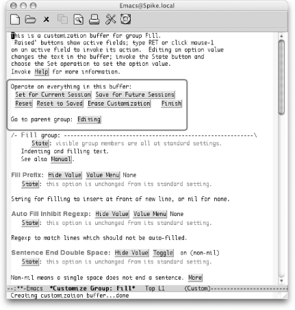</div></div><p class="title3"><b class="calibre25">Figure 10-2. The actions common to all pages in Custom (Mac OS X)</b></p></div><br class="book"/><p class="copyright">From here you can perform any of the following tasks:</p><div class="book"><dl class="copyright"><dt class="book"><span>Set for Current Session</span></dt><dd class="calibre20"><p class="copyright">Make immediate changes <a id="gnu3-CHP-10-ITERM-2645" class="calibre2"></a>
                        <a id="gnu3-CHP-10-ITERM-2646" class="calibre2"></a>that last for the duration of
this session but will be reset the next time you start Emacs.</p></dd><dt class="book"><span>Save for Future Sessions</span></dt><dd class="calibre20"><p class="copyright">Make immediate changes that last for the duration of this session and
will also be in place the next time you start Emacs. These changes
are stored in your <span><em class="calibre7">.emacs</em></span> file.</p></dd><dt class="book"><span>Reset</span></dt><dd class="calibre20"><p class="copyright">Switch back to the previous <a id="gnu3-CHP-10-ITERM-2647" class="calibre2"></a>
                        <a id="gnu3-CHP-10-ITERM-2648" class="calibre2"></a>values (previous to your
current changes, anyway).</p></dd><dt class="book"><span>Reset to Saved </span></dt><dd class="calibre20"><p class="copyright">Switch back to the previously saved values. In this case,
"saved" means saved for future
sessions. If you haven't made (and subsequently
saved) any customizations to a variable, this option has no effect.</p></dd><dt class="book"><span>Erase Customization </span></dt><dd class="calibre20"><p class="copyright">This option pretty much
<a id="gnu3-CHP-10-ITERM-2649" class="calibre2"></a>
                        <a id="gnu3-CHP-10-ITERM-2650" class="calibre2"></a>
                        <a id="gnu3-CHP-10-ITERM-2651" class="calibre2"></a>does what it says. Any
customizations made by Custom, whether for this or future sessions,
are removed. Your own personal entries in your
<span><em class="calibre7">.emacs</em></span> file should remain intact, but
it's always a good idea to make a backup before
deleting any information.</p></dd><dt class="book"><span>Finish</span></dt><dd class="calibre20"><p class="copyright">Close this buffer and return to the previous customization buffer or
back to the buffer from which you launched Custom. Note that you can
also press the <span><strong class="calibre5">q</strong></span> key to activate
Finish from anywhere in a Custom buffer.</p></dd></dl></div><p class="copyright">These options are useful when you modify more than one option on a
page and want to save them all at once (and in the same way).</p><p class="copyright">Custom corrals options into customization groups, which are set up in
a hierarchy of parent and child groups. To go to the parent group for
the group you're looking at, choose the button for
the parent group in question following the <code class="calibre21">Go to parent
group</code>: prompt. To make it easier to find things, a group
might have more than one parent. For example, the I18n
(internationalization) group has two parents,
<code class="calibre21">Environment</code> and <code class="calibre21">Editing</code>, as
shown in <a class="calibre2" href="ch10.html#gnu3-CHP-10-FIG-3" title="Figure 10-3. Custom's Go to parent group prompt">Figure 10-3</a>.</p><div class="figure"><a id="gnu3-CHP-10-FIG-3" class="calibre2"></a><div class="figure-contents"><div class="mediaobject"><a id="I_10_tt522" class="calibre2"></a>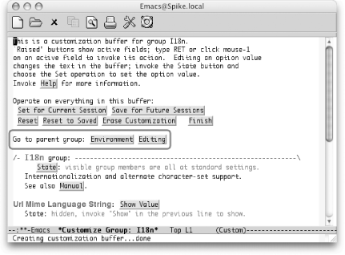</div></div><p class="title3"><b class="calibre25">Figure 10-3. Custom's Go to parent group prompt</b></p></div><br class="book"/><p class="copyright">Choosing <code class="calibre21">Go to parent group</code> is much like choosing
Finish but without closing the buffer. It's a useful
option if you're just poking around looking for
related variables. We'll show you better ways to
find particular features to customize later in this chapter.</p></div><div class="book" xml:lang="en"><div class="book"><div class="book"><div class="book"><h2 class="title1"><a id="gnu3-CHP-10-SECT-1.3" class="calibre1"></a>Customizing with Custom</h2></div></div></div><p class="copyright">After you learn your way around, you can tackle customizing Emacs.
Each screen of Custom lists variables and other settings. You can
edit the value of any variable in the grey text field to the right of
variable's name. The current value should be listed.
Just delete the current value and type the new value.</p><p class="copyright">Changing a value, however, is not the last step you have to take. You
need to save the change before it will take effect. You use the State
button to save the change (as mentioned earlier, to save all the
values on a page in the same way, you can use the options near the
top of the screen). As with other parts of Custom, you can use your
mouse or the keyboard. Clicking the left mouse button on State should
bring up the list shown in <a class="calibre2" href="ch10.html#gnu3-CHP-10-FIG-4" title="Figure 10-4. Using the mouse to save or reset an option (Mac OS X)">Figure 10-4</a>. Depending on
the variable and the change you made (if any), you may or may not
have all of the options available.</p><div class="figure"><a id="gnu3-CHP-10-FIG-4" class="calibre2"></a><div class="figure-contents"><div class="mediaobject"><a id="I_10_tt523" class="calibre2"></a>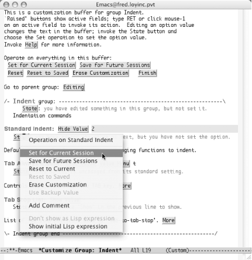</div></div><p class="title3"><b class="calibre25">Figure 10-4. Using the mouse to save or reset an option (Mac OS X)</b></p></div><br class="book"/><p class="copyright">Of course, you can also activate <a id="gnu3-CHP-10-ITERM-2652" class="calibre2"></a>
               <a id="gnu3-CHP-10-ITERM-2653" class="calibre2"></a>
               <a id="gnu3-CHP-10-ITERM-2654" class="calibre2"></a>the
State button by placing your cursor on it and pressing <span><strong class="calibre5">Enter</strong></span>. That should create a second window with
effectively the same options you get when using the mouse. <a class="calibre2" href="ch10.html#gnu3-CHP-10-FIG-5" title="Figure 10-5. Using the keyboard to save or reset an option (Mac OS X)">Figure 10-5</a> shows the options you see using the <span><strong class="calibre5">Enter</strong></span> key to select State. This list is
dynamic, showing only options that are available to you. (It
won't show any options if you
haven't changed anything yet, but it beeps with an
error.)</p><div class="figure"><a id="gnu3-CHP-10-FIG-5" class="calibre2"></a><div class="figure-contents"><div class="mediaobject"><a id="I_10_tt524" class="calibre2"></a>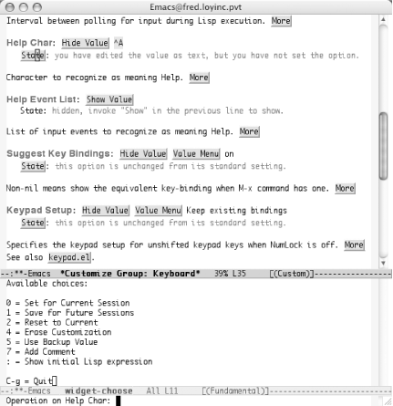</div></div><p class="title3"><b class="calibre25">Figure 10-5. Using the keyboard to save or reset an option (Mac OS X)</b></p></div><br class="book"/><p class="copyright">When using the mouse, simply select the desired choice from the list.
When using the text approach, type the number (or other character)
corresponding to your desired choice. The options available are
similar to those that apply to the entire buffer.
You'll see the familiar save and reset options along
with a few new ones:</p><div class="book"><dl class="copyright"><dt class="book"><span>Set for Current Session</span></dt><dd class="calibre20"><p class="copyright">Same as the global option. Saves the <a id="gnu3-CHP-10-ITERM-2655" class="calibre2"></a>
                        <a id="gnu3-CHP-10-ITERM-2656" class="calibre2"></a>new value for the duration of
this session.</p></dd><dt class="book"><span>Save for Future Sessions</span></dt><dd class="calibre20"><p class="copyright">Same as the global option. Applies this value immediately and updates
your <span><em class="calibre7">.emacs</em></span> file so the new value is used
whenever you start Emacs.</p></dd><dt class="book"><span>Reset to Current</span></dt><dd class="calibre20"><p class="copyright">Goes back to the current value for the variable. Any unsaved changes
are thrown out, but changes saved—even just for this
session—count as "current"
changes.</p></dd><dt class="book"><span>Erase Customization</span></dt><dd class="calibre20"><p class="copyright">Same as the global option. Any changes to the variable are removed
and <span><em class="calibre7">.emacs</em></span> is updated if needed.</p></dd><dt class="book"><span>Use Backup Value</span></dt><dd class="calibre20"><p class="copyright">Goes back to the value saved before the
"current" value was set. In other
words, revert to the value replaced by the most recent save.</p></dd><dt class="book"><span>Add Comment</span></dt><dd class="calibre20"><p class="copyright">You can add your own comments <a id="gnu3-CHP-10-ITERM-2657" class="calibre2"></a>
                        <a id="gnu3-CHP-10-ITERM-2658" class="calibre2"></a>to the variable to help you remember
why you made this change. Comments last as long as the saved change.
Changes made only for the current session keep the comment only for
the current session (not often useful). Comments added to changes
that you save for future sessions show up on this screen in those
future sessions. Erasing the customized value also erases comments.</p></dd></dl></div><p class="copyright">If you make a mistake or supply a value that is not appropriate for
the variable, you get a brief error message in the minibuffer. As
with other utilities that grew up in the world of Unix, no news is
good news. If you don't see any error messages, your
change was successfully saved.</p></div><div class="book" xml:lang="en"><div class="book"><div class="book"><div class="book"><h2 class="title1"><a id="gnu3-CHP-10-SECT-1.4" class="calibre1"></a>An Abbrev Mode Example</h2></div></div></div><p class="copyright">Word abbreviation mode <a id="gnu3-CHP-10-ITERM-2659" class="calibre2"></a>
               <a id="gnu3-CHP-10-ITERM-2660" class="calibre2"></a>is a wonderful way to correct typos on the
fly. But it can't work that way unless it is turned
on. Let's use Custom to turn on word abbreviation
mode (discussed in <a class="calibre2" href="ch03.html" title="Chapter 3. Search and Replace">Chapter 3</a>).</p><div class="book"><a id="ch10-5-fm2xml" class="calibre2"></a><table class="calibre8"><colgroup class="calibre9"><col class="calibre10"/></colgroup><tbody class="calibre15"><tr class="calibre12"><td class="calibre17">
                           <p class="copyright">Type: <span><strong class="calibre5">M-x custom Enter</strong></span>
                           </p>
                        </td></tr><tr class="calibre12"><td class="calibre17">
                           <p class="copyright">
                              </p><div class="book"><div class="mediaobject"><a id="I_10_tt525" class="calibre2"></a>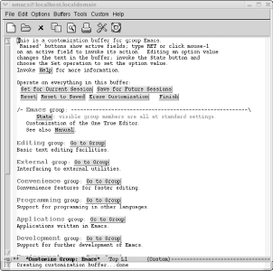</div></div><p class="copyright">
                           </p>
                        </td></tr><tr class="calibre12"><td class="calibre19">
                           <p class="copyright">Main customization screen.</p>
                        </td></tr></tbody></table></div><div class="book"><a id="ch10-6-fm2xml" class="calibre2"></a><table class="calibre8"><colgroup class="calibre9"><col class="calibre10"/></colgroup><tbody class="calibre15"><tr class="calibre12"><td class="calibre17">
                           <p class="copyright">Click on the Go to Group button next to Editing group</p>
                        </td></tr><tr class="calibre12"><td class="calibre17">
                           <p class="copyright">
                              </p><div class="book"><div class="mediaobject"><a id="I_10_tt526" class="calibre2"></a>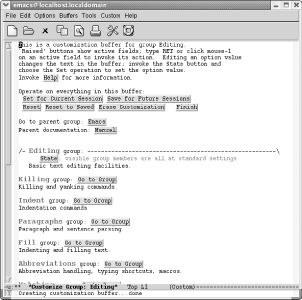</div></div><p class="copyright">
                           </p>
                        </td></tr><tr class="calibre12"><td class="calibre19">
                           <p class="copyright">The Editing group.</p>
                        </td></tr></tbody></table></div><div class="book"><a id="ch10-7-fm2xml" class="calibre2"></a><table class="calibre8"><colgroup class="calibre9"><col class="calibre10"/></colgroup><tbody class="calibre15"><tr class="calibre12"><td class="calibre17">
                           <p class="copyright">Click on the Go to Group button next to Abbreviations group</p>
                        </td></tr><tr class="calibre12"><td class="calibre17">
                           <p class="copyright">
                              </p><div class="book"><div class="mediaobject"><a id="I_10_tt527" class="calibre2"></a>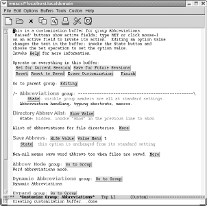</div></div><p class="copyright">
                           </p>
                        </td></tr><tr class="calibre12"><td class="calibre19">
                           <p class="copyright">The Abbreviations group.</p>
                        </td></tr></tbody></table></div><div class="book"><a id="ch10-8-fm2xml" class="calibre2"></a><table class="calibre8"><colgroup class="calibre9"><col class="calibre10"/></colgroup><tbody class="calibre15"><tr class="calibre12"><td class="calibre17">
                           <p class="copyright">Click on the Go to Group button next to Abbrev Mode group</p>
                        </td></tr><tr class="calibre12"><td class="calibre17">
                           <p class="copyright">
                              </p><div class="book"><div class="mediaobject"><a id="I_10_tt528" class="calibre2"></a>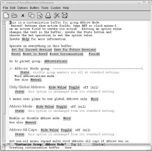</div></div><p class="copyright">
                           </p>
                        </td></tr><tr class="calibre12"><td class="calibre19">
                           <p class="copyright">The Abbrev Mode group.</p>
                        </td></tr></tbody></table></div><p class="copyright">Finally, we're at a screen where we can set the
option! Notice that the first content line, Abbrev Mode group, says
next to the State button <code class="calibre21">visible group members are all at
standard settings</code>. Also note that Abbrev Mode, near the
bottom of the screen, says <code class="calibre21">this option is unchanged from its
standard setting</code>.</p><p class="copyright">We'll turn on the Abbrev Mode option by pressing the
Toggle button.</p><div class="book"><a id="ch10-9-fm2xml" class="calibre2"></a><table class="calibre8"><colgroup class="calibre9"><col class="calibre10"/></colgroup><tbody class="calibre15"><tr class="calibre12"><td class="calibre17">
                           <p class="copyright">Click Toggle next to Abbrev Mode</p>
                        </td></tr><tr class="calibre12"><td class="calibre17">
                           <p class="copyright">
                              </p><div class="book"><div class="mediaobject"><a id="I_10_tt529" class="calibre2"></a>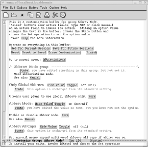</div></div><p class="copyright">
                           </p>
                        </td></tr><tr class="calibre12"><td class="calibre19">
                           <p class="copyright">Abbrev mode is set to on.</p>
                        </td></tr></tbody></table></div><p class="copyright">The text near Abbrev Mode group now says, <code class="calibre21">You have edited
something in this group, but not set it</code>. The text near the
Abbrev Mode option says, yo<code class="calibre21">u have edited the value as text,
but you have not set the option</code>. These are clear hints that
we must take one more step to set this option. And if those
weren't hints enough, the minibuffer explicitly
instructs, <code class="calibre21">To install your edits, invoke [State] and choose
the Set operation</code>. We could click on the State button next
to the option, but it's just as convenient (if not
more convenient) to click on the Save For Future Sessions option near
the top of the screen. This saves all options we've
changed in the buffer, which in our case is just one option.</p><div class="book"><a id="ch10-10-fm2xml" class="calibre2"></a><table class="calibre8"><colgroup class="calibre9"><col class="calibre10"/></colgroup><tbody class="calibre15"><tr class="calibre12"><td class="calibre17">
                           <p class="copyright">Near the top of the screen, click on Save for Future Sessions</p>
                        </td></tr><tr class="calibre12"><td class="calibre17">
                           <p class="copyright">
                              </p><div class="book"><div class="mediaobject"><a id="I_10_tt530" class="calibre2"></a>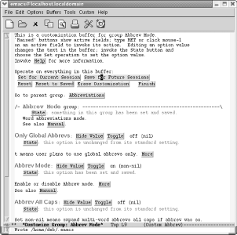</div></div><p class="copyright">
                           </p>
                        </td></tr><tr class="calibre12"><td class="calibre19">
                           <p class="copyright">Emacs tells you that it wrote the <span><em class="calibre7">.emacs</em></span> file.</p>
                        </td></tr></tbody></table></div><p class="copyright">Next to the Abbrev Mode group it now says, <code class="calibre21">something in this
group has been set and saved</code>. Next to the Abbrev Mode
option it says, <code class="calibre21">this option has been set and
saved</code>. Note also that <code class="calibre21">Abbrev</code> appears on
the mode line now; we have indeed successfully turned on word
abbreviation mode. Click Finish repeatedly to kill all the Custom
buffers.</p><p class="copyright">Congratulations; you're on your way to customizing
Emacs. You should spend some time wandering around in the various
groups Custom offers to get a sense of the things you can control.
We'll look at the popular topics of customizing
fonts, colors, and keyboard mappings in later sections. But Custom
offers a much wider variety of areas to tweak. Don't
be afraid to look around. You can always use the Reset option to undo
something that doesn't behave the way you <a id="gnu3-CHP-10-ITERM-2661" class="calibre2"></a>
               <a id="gnu3-CHP-10-ITERM-2662" class="calibre2"></a>expected or wanted.</p></div><div class="book" xml:lang="en"><div class="book"><div class="book"><div class="book"><h2 class="title1"><a id="gnu3-CHP-10-SECT-1.5" class="calibre1"></a>The Options Menu</h2></div></div></div><p class="copyright">You can also access Custom through a
<a id="gnu3-CHP-10-ITERM-2663" class="calibre2"></a>
               <a id="gnu3-CHP-10-ITERM-2664" class="calibre2"></a>bit of a back door: the Options menu. <a class="calibre2" href="ch10.html#gnu3-CHP-10-FIG-6" title="Figure 10-6. The Options menu (Windows)">Figure 10-6</a> shows the Options menu. There are three key
entries at this top level:</p><div class="figure"><a id="gnu3-CHP-10-FIG-6" class="calibre2"></a><div class="figure-contents"><div class="mediaobject"><a id="I_10_tt531" class="calibre2"></a>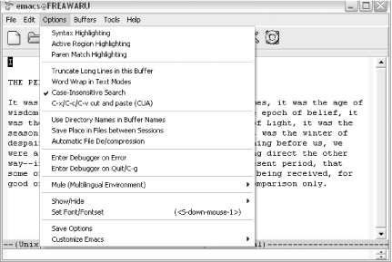</div></div><p class="title3"><b class="calibre25">Figure 10-6. The Options menu (Windows)</b></p></div><br class="book"/><div class="book"><dl class="copyright"><dt class="book"><span>Show/Hide</span></dt><dd class="calibre20"><p class="copyright">Allows you to turn on (and off) several <a id="gnu3-CHP-10-ITERM-2665" class="calibre2"></a>
                        <a id="gnu3-CHP-10-ITERM-2666" class="calibre2"></a>features of Emacs including the menu bar
and toolbar.</p></dd><dt class="book"><span>Save Options</span></dt><dd class="calibre20"><p class="copyright">A quick shortcut to saving any changes you
<a id="gnu3-CHP-10-ITERM-2667" class="calibre2"></a> 
                        <a id="gnu3-CHP-10-ITERM-2668" class="calibre2"></a>
                        <a id="gnu3-CHP-10-ITERM-2669" class="calibre2"></a>
                        <a id="gnu3-CHP-10-ITERM-2670" class="calibre2"></a>make to Emacs through the
Options menu.</p></dd><dt class="book"><span>Customize Emacs</span></dt><dd class="calibre20"><p class="copyright">A submenu that allows you to tweak common items such as fonts and
variables as well as helping you browse and search through the
options available to Custom.</p></dd></dl></div></div><div class="book" xml:lang="en"><div class="book"><div class="book"><div class="book"><h2 class="title1"><a id="gnu3-CHP-10-SECT-1.6" class="calibre1"></a>A Dired Example</h2></div></div></div><p class="copyright">Let's tackle another Custom example
<a id="gnu3-CHP-10-ITERM-2671" class="calibre2"></a>
               <a id="gnu3-CHP-10-ITERM-2672" class="calibre2"></a>
               <a id="gnu3-CHP-10-ITERM-2673" class="calibre2"></a>with the help of the Options menu.
Dired (discussed in <a class="calibre2" href="ch05.html" title="Chapter 5. Emacs as a Work Environment">Chapter 5</a>) has many
customizable features. One such feature is the <span><strong class="calibre5">dired-view-command-alist</strong></span> variable. This is a
list of helper applications that allow you to open various kinds of
files. This feature can be quite handy for viewing binary files such
as images or PDF files. This list of helper applications is tailored
to Linux. If you want to use other applications or
you're on a Windows or Mac system,
you'll need to customize this variable.</p><p class="copyright">Before you customize this option, you need to open a directory or
simply type <span><strong class="calibre5">C-x d</strong></span> to enter Dired.
Next, from the Options <span>→</span> Customize Emacs menu, select the
Specific Option item.</p><div class="book"><a id="ch10-11-fm2xml" class="calibre2"></a><table class="calibre8"><colgroup class="calibre9"><col class="calibre10"/></colgroup><tbody class="calibre15"><tr class="calibre12"><td class="calibre17">
                           <p class="copyright">Choose Options<span>→</span> Customize Emacs<span>→</span> Specific Option</p>
                        </td></tr><tr class="calibre12"><td class="calibre17">
                           <p class="copyright">
                              </p><div class="book"><div class="mediaobject"><a id="I_10_tt532" class="calibre2"></a>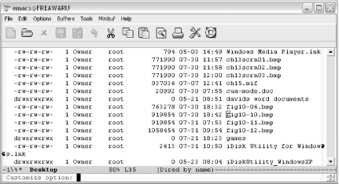</div></div><p class="copyright">
                           </p>
                        </td></tr><tr class="calibre12"><td class="calibre19">
                           <p class="copyright">The minibuffer prompts for a specific option to customize (Windows).</p>
                        </td></tr></tbody></table></div><p class="copyright">The minibuffer prompts for an option name. We want to customize
<span><strong class="calibre5">dired-view-command-alist</strong></span>.</p><div class="book"><a id="ch10-12-fm2xml" class="calibre2"></a><table class="calibre8"><colgroup class="calibre9"><col class="calibre10"/></colgroup><tbody class="calibre15"><tr class="calibre12"><td class="calibre17">
                           <p class="copyright">Type: <span><strong class="calibre5">dired-view-command-alist</strong></span>
                              <span><strong class="calibre5">Enter</strong></span>
                           </p>
                        </td></tr><tr class="calibre12"><td class="calibre17">
                           <p class="copyright">
                              </p><div class="book"><div class="mediaobject"><a id="I_10_tt533" class="calibre2"></a>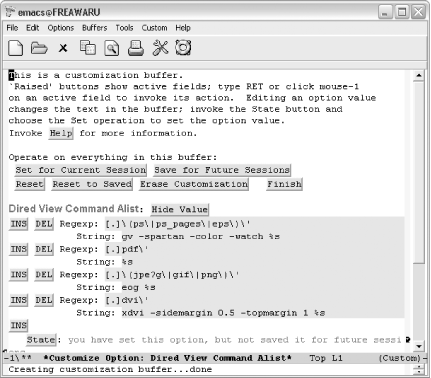</div></div><p class="copyright">
                           </p>
                        </td></tr><tr class="calibre12"><td class="calibre19">
                           <p class="copyright">Editing a list entry in Custom (Windows).</p>
                        </td></tr></tbody></table></div><p class="copyright">You should see the familiar Custom options for saving and resetting
the values along with the value of the <span><strong class="calibre5">dired-view-command-alist</strong></span> variable. For this
particular variable, we have a list of entries for common file types
including PostScript files, PDF documents, and images. To alter one
of the existing entries, simply move to the <code class="calibre21">String</code>
line and edit the text in grey to launch the application you would
like to use. (You can also alter the filename pattern by editing the
text in the <code class="calibre21">Regexp</code> line.) For example, PDF
documents can be viewed with the open command in Mac OS X, so we
could change that line as shown in <a class="calibre2" href="ch10.html#gnu3-CHP-10-FIG-7" title="Figure 10-7. Editing a list entry in Custom (Mac OS X)">Figure 10-7</a>. In
fact, on Mac OS X, you can use the generic open command for just
about every type of file. On Windows it is even easier. Simply enter
<span><strong class="calibre5">%s</strong></span> as the string, and Windows uses
its default application to open that file type.</p><div class="figure"><a id="gnu3-CHP-10-FIG-7" class="calibre2"></a><div class="figure-contents"><div class="mediaobject"><a id="I_10_tt534" class="calibre2"></a>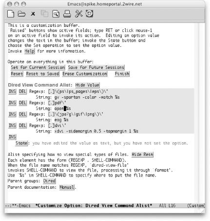</div></div><p class="title3"><b class="calibre25">Figure 10-7. Editing a list entry in Custom (Mac OS X)</b></p></div><br class="book"/><p class="copyright">If you don't use DVI documents, you can get rid of
that association using the DEL button shown in <a class="calibre2" href="ch10.html#gnu3-CHP-10-FIG-8" title="Figure 10-8. Deleting a list entry in Custom (Mac OS X)">Figure 10-8</a>.</p><div class="figure"><a id="gnu3-CHP-10-FIG-8" class="calibre2"></a><div class="figure-contents"><div class="mediaobject"><a id="I_10_tt535" class="calibre2"></a>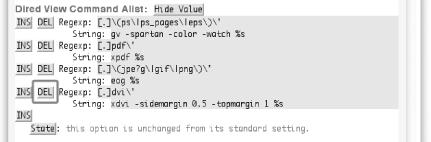</div></div><p class="title3"><b class="calibre25">Figure 10-8. Deleting a list entry in Custom (Mac OS X)</b></p></div><br class="book"/><p class="copyright">You can also add new document types and viewers by clicking on any of
the INS buttons. (The order of the associations
isn't important for this particular variable, but it
might matter for other lists.) To insert a new association
<span><em class="calibre7">before</em></span> the PDF entry, activate the INS button to
the left of the PDF entry.</p><div class="book"><a id="ch10-13-fm2xml" class="calibre2"></a><table class="calibre8"><colgroup class="calibre9"><col class="calibre10"/></colgroup><tbody class="calibre15"><tr class="calibre12"><td class="calibre17">
                           <p class="copyright">Click on INS to the left of the PDF entry.</p>
                        </td></tr><tr class="calibre12"><td class="calibre17">
                           <p class="copyright">
                              </p><div class="book"><div class="mediaobject"><a id="I_10_tt536" class="calibre2"></a>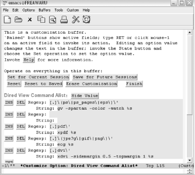</div></div><p class="copyright">
                           </p>
                        </td></tr><tr class="calibre12"><td class="calibre19">
                           <p class="copyright">The first step in adding a new item to a list in Custom (Windows).</p>
                        </td></tr></tbody></table></div><p class="copyright">Now you can add an association for playing MP3 files on a PC by
editing both the <code class="calibre21">Regexp</code> and
<code class="calibre21">String</code> lines. Note that you'd
have to supply a path to your helper application (winamp in this
example) that matched your system. As mentioned earlier, if winamp
was already the default helper application for MP3s, you could simply
type <span><strong class="calibre5">%s</strong></span> for the
<code class="calibre21">String</code> instead of the complete path to winamp.</p><div class="book"><a id="ch10-14-fm2xml" class="calibre2"></a><table class="calibre8"><colgroup class="calibre9"><col class="calibre10"/></colgroup><tbody class="calibre15"><tr class="calibre12"><td class="calibre17">
                           <p class="copyright">Type <span><strong class="calibre5">[.]mp3\</strong></span>' for the
<code class="calibre21">Regexp</code> and <span><strong class="calibre5">c:\apps\media\winamp.exe %s</strong></span> for the
<code class="calibre21">String</code>:</p>
                        </td></tr><tr class="calibre12"><td class="calibre17">
                           <p class="copyright">
                              </p><div class="book"><div class="mediaobject"><a id="I_10_tt537" class="calibre2"></a>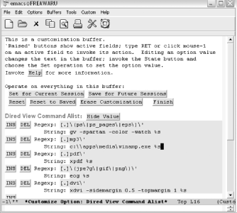</div></div><p class="copyright">
                           </p>
                        </td></tr><tr class="calibre12"><td class="calibre19">
                           <p class="copyright">The second step in adding a new item (Windows).</p>
                        </td></tr></tbody></table></div><p class="copyright">You may have noticed the Save Changes option in the Options menu.
This menu item saves changes you make through the Options menu. For
example, you can modify such settings as whether or not the toolbar
is visible or the Save Place in Files between Sessions option. It
does not save changes you have made through Custom—even if you
launched Custom from one of the Options <span>→</span> Customize Emacs
submenu items. You'll still need to use the normal
Custom options to save those changes.</p><p class="copyright">For our Dired variable example, then, you'll need to
select one of the Save options available. In this case,
we'll save it for the current session only.</p><div class="book"><a id="ch10-15-fm2xml" class="calibre2"></a><table class="calibre8"><colgroup class="calibre9"><col class="calibre10"/></colgroup><tbody class="calibre15"><tr class="calibre12"><td class="calibre17">
                           <p class="copyright">Click on Set for Current Session</p>
                        </td></tr><tr class="calibre12"><td class="calibre17">
                           <p class="copyright">
                              </p><div class="book"><div class="mediaobject"><a id="I_10_tt538" class="calibre2"></a>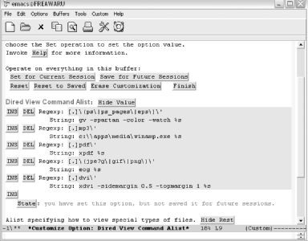</div></div><p class="copyright">
                           </p>
                        </td></tr><tr class="calibre12"><td class="calibre19">
                           <p class="copyright">Saving changes for this session only (Windows).</p>
                        </td></tr></tbody></table></div><p class="copyright">When you're done saving your changes, you can exit
the buffer as usual by clicking the Finish button, typing <span><strong class="calibre5">q</strong></span>, or typing <span><strong class="calibre5">C-x
k</strong></span> to kill the buffer.</p></div><div class="book" xml:lang="en"><div class="book"><div class="book"><div class="book"><h2 class="title1"><a id="gnu3-CHP-10-SECT-1.7" class="calibre1"></a>But Where Is the Variable I Want?</h2></div></div></div><p class="copyright">One of the biggest stumbling blocks to <a id="gnu3-CHP-10-ITERM-2674" class="calibre2"></a>
               <a id="gnu3-CHP-10-ITERM-2675" class="calibre2"></a>using Custom is knowing where
a particular variable is located. Custom has a lot of groups and
subgroups—and they aren't always intuitive.
There are two quick ways to
"search" for a specific variable.
You can press <span><strong class="calibre5">Tab</strong></span> to use the
completion feature in the minibuffer or you can browse through the
entire Custom hierarchy.</p><p class="copyright">To use the completion
<a id="gnu3-CHP-10-ITERM-2676" class="calibre2"></a>approach, type <span><strong class="calibre5">M-x customize-option</strong></span> or select
Options<span>→</span> Customize Emacs<span>→</span> Specific Option.
You'll see <code class="calibre21">Customize Option</code>: in
the minibuffer. You can type a string like <span><em class="calibre7">font</em></span>
and then hit the <span><strong class="calibre5">Tab</strong></span> key to see what
variables start with that string.</p><p class="copyright">You can also create a custom buffer with options matching a regular
expression with <span><strong class="calibre5">M-x
customize-apropos</strong></span> (or Options<span>→</span> Customize
Emacs<span>→</span> Options Matching Regexp). You can type in a regular
expression (or a simple string) and Custom builds a new buffer with
all groups containing matching options.</p><p class="copyright">If you want to browse the hierarchy to see the related groups of
variables in a reasonably compact view, select Options <span>→</span>
Customize Emacs <span>→</span> Browse Customization Groups. That should
land you on a screen similar to <a class="calibre2" href="ch10.html#gnu3-CHP-10-FIG-9" title="Figure 10-9. Browsing customization groups (Mac OS X)">Figure 10-9</a>.</p><div class="figure"><a id="gnu3-CHP-10-FIG-9" class="calibre2"></a><div class="figure-contents"><div class="mediaobject"><a id="I_10_tt539" class="calibre2"></a>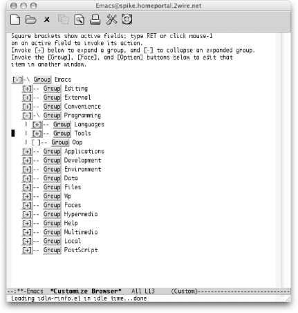</div></div><p class="title3"><b class="calibre25">Figure 10-9. Browsing customization groups (Mac OS X)</b></p></div><br class="book"/><p class="copyright">You can activate the [+] and [-] buttons just like you do other
Custom buttons (click on them with your mouse or move the keyboard
cursor to them and press <span><strong class="calibre5">Enter</strong></span>.)
This allows you to browse the entire set of Custom groups and
subgroups. After you find the variable you're
looking for, click on the Option button next to the variable or click
on the Group button for the variable's parent group
if you want to edit multiple variables in the group.</p></div></div></div></div>

{% endraw %}

